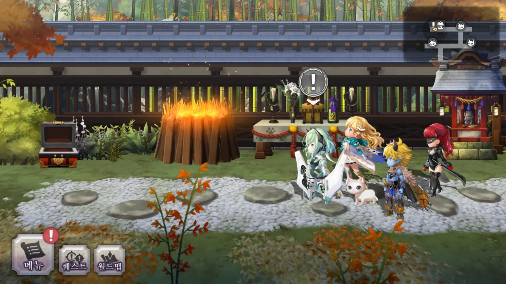
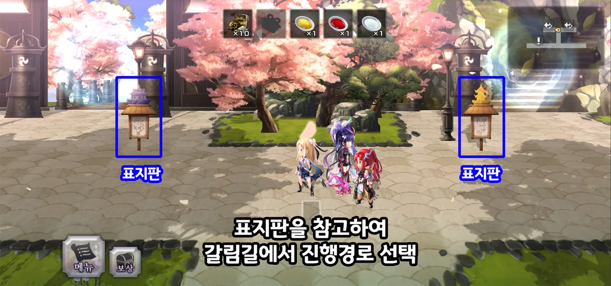

글래스터 파밍의 출발점. 분기형 2지선다 구조에 6종류 에어리어 중 2개가 랜덤 출현한다. 하급·중급 공격/생명/지원 글래스터를 꾸준히 수급하고, 이자나 NPC와 고양이 에마를 교환해 상급을 얻는 루트가 표준.

글래스터(Grasta)는 무기·방어구·뱃지에 이은 제3의 장비 슬롯이다. 2부 전편 제48장 클리어 후 해금되며, 4계열 × 4등급 × 연성 변수의 조합으로 캐릭터 성능을 결정짓는다. 이 가이드는 시스템의 수학적 구조(등급별 보너스, 연성 배수), 획득 경로(14개 Another Dungeon), 실전 세팅 원칙(페페페/독독독/셔틀)을 체계적으로 정리하여 무엇을 · 어디서 · 왜 세 질문에 답한다.
글래스터 시스템을 처음 접하는 플레이어를 위한 개념 정리. 이 파트만 읽어도 전체 그림을 잡을 수 있도록 설계했다.
글래스터는 메인스토리 2부 전편(제48장1) 클리어 후 해금되는 장비 슬롯이다. 캐릭터의 공격력을 단순히 더해주는 것이 아니라 속성 강화 · 회복 · 상태이상 · 필살기 부여를 세밀히 튜닝한다.
| 계열 | 색 | 주요 효과 | 재료 타입 |
|---|---|---|---|
| 공격 | 빨강 | 속성 강화, 독/페인 시 데미지 ↑, 상태이상 부여 | 공격의 조각/결정/경옥 |
| 생명 | 초록 | HP·MP 회복, 후열 치유, 승리 시 회복 | 생명의 조각/결정/경옥 |
| 지원 | 파랑 | 디버프 내성, 선제공격, 스킬 부여 | 지원의 조각/결정/경옥 |
| 특수 | 보라 | VC 강화, 캐릭터 전용, 필살기 강화 | 특수 조각/결정 |


| 등급 | 스탯 보너스 | 대표 효과치 | 입수 난이도 |
|---|---|---|---|
| 하급 | 3/3 (HP 150) | 10% (연성 시 20%) | 낮음 — 어나던 파밍 |
| 중급 | 5/5 (HP 300) | 20% (연성 시 30%) | 중간 — 어나던 파밍 |
| 상급 | 10/10 (HP 300 / MP 50) | 30% (연성 시 40% 또는 P연성) | 높음 — 대부분 1회 교환 한정 |
| 특수 | 15/15 또는 30/30 | 고유 효과 | 특수 — 캐릭터/콘텐츠 전용 |
| 슬롯 | 개방 조건 | 비고 |
|---|---|---|
| 1번 | 제48장 클리어 | 초기 개방 |
| 2번 | 제50장 클리어 | |
| 3번 | 제55장 클리어 | |
| 4번 | 천명(天冥) 200 이상 | 장기 목표 |
| 특수 | 제57장 클리어 | 증표 글래스터 전용, 1개 한정 |
글래스터 이름에 <검>, <창> 같은 태그가 있으면 해당 무기종 캐릭터만 장착 가능하다. <퍼스널리티> 태그도 동일. 캐릭터 페이지에서 미리 확인하고 구매·교환할 것.
글래스터는 3단계 강화 경로를 거친다 — 활성화 → 각성 → 연성. 처음 두 단계는 고양이 신전(사당)에서 수행하고, 연성은 제70장 이후 추가되는 최종 강화다.
비활성 상태의 글래스터는 스탯조차 붙지 않는다. 활성화로 기본 스탯을 얻고, 각성으로 특수 효과가 발현된다. 동방 가를레아 각지의 고양이 신전에서 수행하며, 제54장 서브이벤트 방울부적의 은혜 완료 시 메인 메뉴에서도 가능해진다.

| 등급 | 활성화 | 각성 |
|---|---|---|
| 하급 | 조각 × 20 + 50,000 G | 조각 × 40 + 100,000 G |
| 중급 | 조각 × 40 + 100,000 G | 조각 × 100 + 200,000 G |
| 상급 | 조각 × 100 + 150,000 G | 조각 × 300 + 결정 × 30 + 경옥 × 1 + 300,000 G |
| 특수 | 특수조각 × 20 + 50,000 G | 특수조각 × 40 + 특수결정 × 10 + 100,000 G |
상급 각성은 경옥 1개를 반드시 소모한다. 경옥은 획득 루트가 제한적이므로, 어떤 상급 글래스터를 각성할지 신중히 선택할 것. 잘못 고르면 되돌릴 수 없다.
제70장 이후, 각성 완료된 글래스터에 광석을 장착해 추가 효과를 부여하는 최종 단계. 광석은 크게 잠재(Dormant) · 특수(Specialized) · 복원(Reversion) 3종으로 구분된다.
| 광석 분류 | 대표 예시 | 효과 특징 |
|---|---|---|
| 잠재 광석 | 장미가시, 배수의 진, 시련, 저격, 구사일생 | 효과치 상승, 조건부 데미지 ↑, 상태 보장 |
| 특수 광석 | P 연성(파티 공유형) | 후열에서도 전열에 효과 전달 — 셔틀 빌드의 핵심 |
| 복원 광석 | 분리·해제 후 다시 사용 가능 | 실수 회복용, 재활용 가능 |
대표 잠재 광석의 효과치를 숫자로 정리하면 다음과 같다. 같은 효과군 광석을 중첩 장착할 때의 곱셈·덧셈 여부는 실제 세팅의 효율을 완전히 갈라놓는 핵심 포인트.
| 광석 | 약칭 | 효과 | 중첩 |
|---|---|---|---|
| 장미가시 | 장미 | 데미지 +15% / MP 소모 +50% | — |
| 배수의 진 | 배수 | 적 2체 이상 시 데미지 ↑ | — |
| 시련 | 시련 | 약점 데미지 +10% | 포박과 가산 |
| 저격 | 저격 | AF 외 데미지 +50% | — |
| 구사일생 | 버티기 | HP 풀일 때 전투 중 1회 HP 1 생존 | — |
같은 효과의 상급 글래스터끼리는 곱셈으로 쌓인다. 예: 통증의 힘 3개 장착 시 페인 발동 시 배율은 1.3³ ≈ 2.197배2. 반면 속성 중급 글래스터 3개는 덧셈으로 +60%. 곱셈 빌드가 극단적으로 강한 이유다.
글래스터와 연성 광석은 대부분 Another Dungeon(AD)에서 얻는다. 아래 요약 표에서 전체 던전을 한눈에 비교하고, 각 아코디언을 열어 세부 공략 이미지와 교환 포인트를 확인하라. 이미지는 일본 altema.jp와 한국 arca.live 어나더 에덴 채널에서 인용했다3.
| 던전 | 파트 | 해금 | 핵심 획득 |
|---|---|---|---|
| 현대 가를레아 | PGAD · 2부 전편 | 제48장 | 하·중급 글래, 황금 무기 파편, 고양이 에마 |
| 고대 가를레아 | AGAD · 2부 중편 | 제66장 | 마물의 뼈, 선진적인 토우, 고대 방어구 |
| 미래 가를레아 | FGAD · 2부 후전(轉) | 제74장 | 변질 광석, 영석 조각, 초밥 무기 4종 |
| 명협계 | UAD · 2부 후결(結) | 제83장 | 표류물, 고양이 토우, 아공 무기 소재 |
| 오메가폴리스 | OAD · 3부 전편 | 제92장 | 버디 장비, 엘피스 무기, 황금 태엽 |
| 엔트라나 | EAD · 3부 중편 | 제104장 | 천년 나무 방어구, 연대기 무기, 堅多比 |
| 지스몬데 | 3부 후편 | 제114장 | 화정 방어구, 신규 연성 광석, タネ箒 |
| 기타 7종 | 심화 · 외전 | 이벤트별 | 명옥·방주·마수성·다마쿠·토토·시간의탑·실락 |
글래스터 파밍의 출발점. 분기형 2지선다 구조에 6종류 에어리어 중 2개가 랜덤 출현한다. 하급·중급 공격/생명/지원 글래스터를 꾸준히 수급하고, 이자나 NPC와 고양이 에마를 교환해 상급을 얻는 루트가 표준.
도구(토우·뼈)를 모아 상급 글래스터 및 방어구를 교환한다. 도구는 던전을 포기해도 인벤토리에 남으므로, 원하는 에어리어만 도는 부분 파밍이 가능하다.

4층 구조 — 거점 → 소재 채집 → 보물 → 보스. 변질 광석을 모아 신에어리어 개방(13개), ID카드(13개), 글래스터 연성 소재 교환(180개)에 사용한다. AF 1~2턴 내 보스 격파 로테가 주회 효율의 정석.

2부 후결의 정점이자 글래스터 심화의 시작. 던전 내 세 경로에 각각 보스가 존재하며, 보상·교환 NPC·퀘스트가 복합적으로 얽혀있다. 아래는 일본 공략 지도의 한자 주석(열쇠/기도의 손거울 사용처)과 한국어 실게임 스크린샷이다.



월철의 숲에서 녹슨 부품을 모아 생명공장을 해금하고, 중층 진입에는 헌터 라이선스가 필요하다. 흔들림의 조각 5개로 페이즈 시프트를 전개하면 녹슨 부품 획득률이 1.3배 증가.


메인스토리 외의 던전에서도 고유 글래스터·방어구가 등장한다. 각 던전의 주요 보상과 특이점을 요약한다.
대부분의 캐릭터에게 통용되는 범용 빌드 원칙은 네 가지로 귀결된다 — 곱셈 중첩, 속성 가산, 광석 조합, P연성 셔틀. 이 장은 단계별 우선순위와 실제 수치 계산까지 포함한다.
내 캐릭터가 어떤 빌드로 수렴해야 하는지 판단하는 가장 빠른 길:
① 상태이상을 거는가?
→ 페인 걸 수 있음 → 페페페 (통증의 힘 ×3)
→ 독 걸 수 있음 → 독독독 (유독의 힘 ×3)
→ 둘 다 안 걸림 → ②
② 단일 속성 딜러인가?
→ 네 → 중중중 (해당 속성 중급 ×3) + 상급 1종
→ 다속성/밸런스 → 범용 중급 2 + 방어성 1
③ 메인 딜러가 아닌가(닦이/버퍼)?
→ P연성 글래 3~4개 전용 셔틀로 전환 고려
게임 진행 단계별로 도달 가능한 빌드와, 각 단계에서 다음 단계로 넘어가는 전환 시점을 표로 정리.
| 단계 | 진도 | 핵심 빌드 | 기대 배율 | 전환 신호 |
|---|---|---|---|---|
| 🌱 뉴비 | 48–70장 | 중중중 (속성 중급 ×3) + 생명 1 | +60% · 가산 |
첫 상급 글래 각성 시 → 2단계 |
| 🌿 중반 | 70–90장 | 페페페 / 독독독 중 1종 + 광석 1개 | ×2.197 · 곱셈 |
P연성 광석 3개 이상 확보 시 → 3단계 |
| 🌳 엔드 | 92장+ | 전열 = 페페페+자창+저격, 후열 = 셔틀(P연성) | ×3.5+ · 곱셈+조건 |
천명 200 달성 시 → 4단계 |
| 🌟 4슬롯 | 천명 200 | 4번 슬롯에 광성 / 포박 / 시련 중 캐릭 맞춤 | +루나 2턴 · 약점 ×50% |
극글래 수급 시 → 마이크로 최적화 |
같은 효과 상급 글래스터 3개를 겹치면 곱셈으로 누적된다. 이 곱셈 구조가 페인/독 빌드를 "극단적으로 강한 선택"으로 만드는 핵심 이유.
| 장착 수 | 통증의 힘 (페인 시) | 수식 | 누적 배율 |
|---|---|---|---|
| 0개 | — | 1.00 | ×1.00 |
| 1개 | +30% | 1.30 | ×1.30 |
| 2개 | +30% × +30% | 1.30² | ×1.69 |
| 3개 (페페페) | +30% × +30% × +30% | 1.30³ | ×2.197 |
| 상급 자창 추가 | 페인 +35% 치환 | 1.30² × 1.35 | ×2.282 |
독 빌드도 동일 구조. 유독의 힘 3개 = 독 상태일 때 ×2.197배. 페페페·독독독이 의존하는 전제는 상태이상 100% 명중률이므로, 닦이/버퍼가 먼저 페인·독을 확정적으로 걸어줘야 한다.
상태이상 내성 몬스터 또는 레지스턴스 +50% 보스에서는 페페페가 발동 않고 실효 데미지가 기본값 ×1.00으로 떨어진다. 이런 보스는 중중중이 오히려 안정적 — 빌드를 고정하지 말고 콘텐츠별 스왑하는 습관을 들여야 한다.
광석은 동일 효과는 중첩할 수 없으나 서로 다른 효과는 각자의 조건에 따라 곱셈 또는 가산으로 중첩된다. 주요 조합과 그 효과식:
| 조합 | 조건 | 효과 | 추천 대상 |
|---|---|---|---|
| 시련 + 포박 | 약점 타격 | +10% + +50% = +60% 가산 | 약점 저격 빌더 |
| 장미 + 배수 | 적 2체+ · HP 풀 | +15% × 배수% 곱셈 | 잡몹 쓸이 AoE |
| 저격 + 버티기 | AF 외 · HP 1 안전망 | +50% 안정성↑ | 보스 러쉬 |
| 시련 + 저격 + 포박 | AF 외 약점 타격 | +10% + 50% + 50% | 엔드게임 원턴덱 |
[P] 글래스터는 파티 전체에 효과를 퍼뜨리는 특수 변환 상태. 메인 딜러가 아닌 후열 캐릭에게 P연성 글래 3~4개를 장착하면, 전열 딜러의 글래슬롯을 건드리지 않고도 파티 전체 딜을 증폭시킬 수 있다.
| 셔틀 슬롯 | 글래스터 | 전달 효과 |
|---|---|---|
| 셔틀 슬롯 1 | P 통증의 힘 | 파티 전체 페인 시 ×1.3 |
| 셔틀 슬롯 2 | P 시련 | 파티 전체 약점 +10% |
| 셔틀 슬롯 3 | P 저격 | 파티 전체 AF 외 +50% |
| 셔틀 슬롯 4 | P 광성 (천명 200 이후) | 루나틱 2턴 연장 |
셔틀 후보로 적합한 캐릭은 전투 기여도가 낮거나 영입 순위가 높은 캐릭. 주로 닦이와 겸직하지 않고 전담 셔틀로 돌리는 게 정석이다.
① 페인 안 걸리는 캐릭에게 페페페 장착(배율 ×1.0으로 낭비) · ② 같은 광석 2개로 "이중 적용" 시도(불가능) · ③ 글래 각성을 모든 캐릭에게 평등 분배(경옥 낭비) · ④ 셔틀에 상급 글래 장착(P연성이 아니면 의미 없음)
증표(Verification Chant) 글래스터는 캐릭터 전용 강화 슬롯. 일반 글래슬롯이 아닌 별도 특수 슬롯에 장착된다 (제57장 클리어 시 개방, 1개 한정).
| 단계 | 약칭 | 획득 · 강화 |
|---|---|---|
| VC 글래 | 증글래 | 고양이 신사 분서(奉納) — 4성 직업서 1 or 5성 직업서 10 |
| 진 VC | 진글래 | 증글래 + 추가 재료 조합 — 캐릭 전용 효과 강화 |
| 극한 증표 | 극글래 | 상위 티어 · 최신 콘텐츠 드롭 · 조건부 최강 |
분서(奉納)는 고양이 신사 분향로에서 수행한다. 무기·직업서를 불태워 특수 파편을 얻고, 특수 파편으로 해당 캐릭터의 VC/진 글래스터를 교환한다.
메인 딜러·지속 딜러로 돌려 쓰는 캐릭부터. VC 글래는 캐릭별로 고유하므로 자주 편성하는 순서대로 파는 게 정석. 신캐 나올 때마다 갈아타지 말 것.
AF(어나더 포스) 개시와 동시에 보스를 1턴에 격파하는 편성. 버프 전개 → 약점 속성 곱연산 → AF 안에서 다단히트 구조. 페페페/독독독 + 저격 + 버티기 안전망이 기본 템플릿이며, 아이템 풀인데도 풀딜이 안 나올 때는 연성 광석 조합이 부족한 경우가 많다.
딜을 직접 넣지 않고 디버프·상태이상·버프 부여를 전담하는 캐릭터. 셔틀이 P연성 자원이라면, 닦이는 주 전투에서의 빠른 전개를 담당한다. 둘을 혼동하지 말 것 — 닦이는 1~2턴에 상태이상을 심고 빠진다.
4번 글래스터 슬롯은 파티 전체 천명 합계 200 이상에서 개방. 캐릭터마다 고유 天/冥 값이 다르고 AD 클리어·특정 콘텐츠로 상승시킨다. 장기 프로젝트로 잡고, 당장 달성하려 하지 말 것.
상급 각성은 경옥을 소모하므로 이미 장착 중인 효과군을 복제하지 말 것. 같은 효과 2개 중첩이 아니라, 다른 조건 2개 겹치기가 대부분 더 강하다.
본 문서에서 사용한 한국어 공식명과 대응 영문/일문, 커뮤니티 약칭을 한 표로 정리한다. 다른 가이드를 교차 참조할 때 사용.
| 한국어 | 영문 | 일문 | 약칭 |
|---|---|---|---|
| 글래스터 | Grasta | グラスタ | 글래 |
| 활성화 | Activation | 活性化 | — |
| 각성 | Awakening | 覚醒 | — |
| 연성 | Enhancement | 錬成 | — |
| 복원 | Reversion | 復元 | — |
| 분리 | Separate | 分離 | 분해 |
| 잠재 광석 | Dormant Ore | 潜在錬成鉱石 | 일반연성 |
| 특수 광석 | Specialized Ore | 特殊鉱石 | — |
| 증표 글래스터 | VC Grasta | 証グラスタ | 증글래 |
| 진 증표 | True VC Grasta | 眞の証 | 진글래 |
| 어나더 던전 | Another Dungeon (AD) | アナザーダンジョン | 어나던 |
| 어나더 포스 | Another Force (AF) | アナザーフォース | 어포 |
| 밸류어 챈트 | Valor Chant (VC) | ヴァリアブルチャント | VC |
| 현대 가를레아 | Present Galrea (PGAD) | 現代ガルレア | 현가를 |
| 고대 가를레아 | Antiquity Galrea (AGAD) | 古代ガルレア | 고가를 |
| 미래 가를레아 | Future Galrea (FGAD) | 未来ガルレア | 미가를 |
| 명협계 | Underworld (UAD) | 冥峡界 | 명협 |
| 오메가폴리스 | Omegapolis (OAD) | — | 오메가 |
| 엔트라나 | Entrana (EAD) | — | 엔트라 |
| 통증의 힘 | Pain (Weapon) T2 | 抉痛の力 | 페인글래 |
| 유독의 힘 | Poison (Weapon) T2 | 害毒の力 | 독글래 |
| 연성 셔틀 | Grasta Mule | — | 셔틀 |
| 닦이 | Support/Buffer | — | 닦이 |